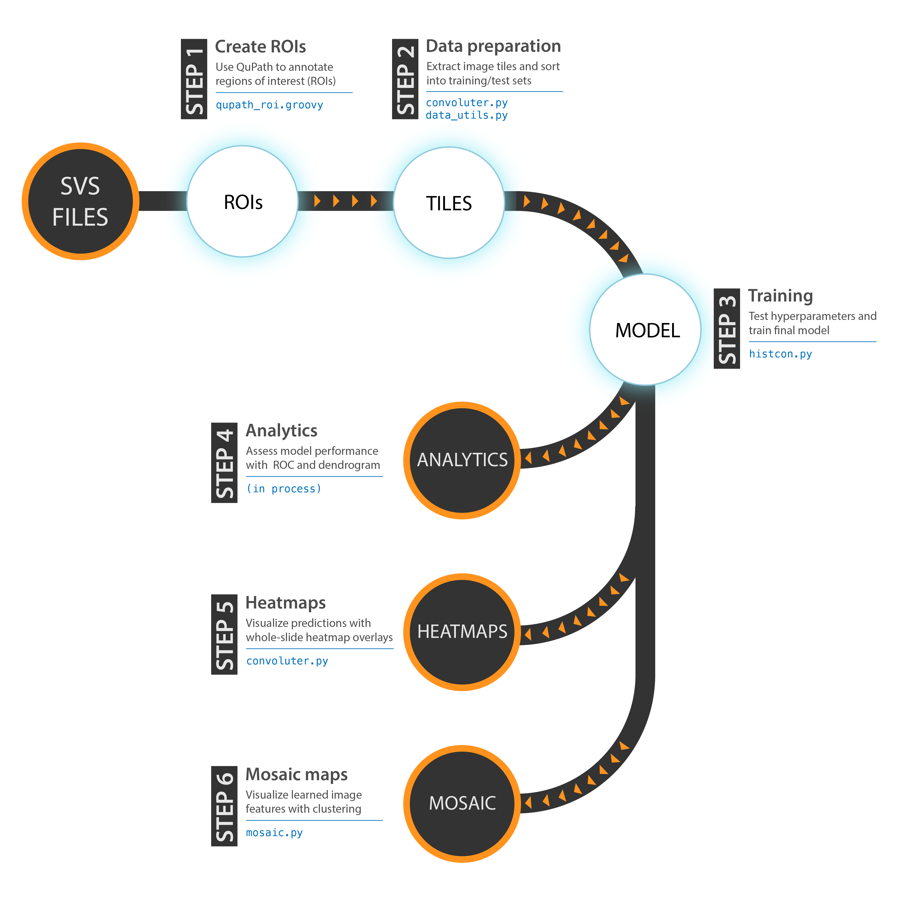

Pipeline Overview¶
The overall pipeline is separated into two phases and 6 steps.
The first phase - Model Creation - involves three steps: 1) labeling slides with regions of interest (ROIs), 2) tessellating and preparing image tiles from the slides, and 3) training a neural network model.
The second phase - Model Assessment - also involves three steps: 1) analytics describing model performance, including basic measures like percent accuracy as well as ROCs and dendrograms, 2) creating heatmap overlays for whole-slide images to visualize predictions, and 3) generating mosaic maps to visualize learned image features.
An overview of each of the six steps is provided below. We will examine execution of these steps in more detail in the next section.
Step 1: Create ROIs¶
- Label ROIs. Using QuPath, annotate whole-slide images with the Polygon tool. Then, load the Groovy script that will export the tile annotations into CSV format by clicking Automate -> Show script editor. In the box that comes up, click File -> Open and load the
qupath_roi.groovyscript. Then, press CTRL + R and wait for the script to finish.
You may choose to speed-up workflow by loading multiple SVS files into a QuPath project, and then running the script on the entire project using “Run for project.”
Step 2: Data Preparation¶
- Extract tiles. Once ROIs have been created, tiles will need to be extracted from the ROIs across all of your slides. Tiles will be extracted at a given magnification size in microns, and saved at a given resolution in pixels. The optimal extraction size in both microns and pixels will depend on your dataset and model architecture.
- Create validation set. After tiles have been extracted, a certain percentage of tiles should be set aside for validation testing during training; slideflow will default to setting aside 10% of your tiles for validation.
- Create TFRecords. Tiles should then be collected and stored as TFRecords, a binary file format used to improve dataset reading performance during training. Each slide should have its own TFRecord file containing its extracted tiles.
Step 3: Model Training¶
- Choose hyperparameters. Before training can begin, you must choose both a model architecture (e.g. InceptionV3, VGG16, ResNet, etc.) and a set of hyperparameters (e.g. batch size, learning rate, etc.). One often does not know the best model architecture and hyperparameters to use for a given dataset; training will often need to occur across a variety of models and different combinations of hyperaparameters in order to find the combination with the best performance. You may either choose to train a single model and hyperparameter set one at a time, or you can setup an automatic hyperparameter sweep to test many combinations at once.
- Initiate training. After the hyperparameters have been set up, training can commence. Training progress can be monitored using Tensorflow’s bundled
Tensorboardpackage:
$ tensorboard --logdir=/path/to/histcon/models/active
… and then opening http://localhost:6006 in your web browser.
Step 4: Analytics¶
Including model performance statistics, ROC, and dendrogram creation. Currently being implemented, documentation will be updated once complete.
Step 5: Visualizing Results with Heatmaps¶
After a model has been trained, accuracy can be assessed by visualizing predictions for a whole slide image.
Step 6: Mosaic maps¶
Visualize learned image features with UMAP/t-SNE plots and mosaic maps. Code completed (mosaic.py), documentation pending.